Instalación en Microsoft Windows 10/11
-
Paso 1: Instalación de Python.
Asegúrese de que Python no esté ya instalado en su sistema antes de continuar con la instalación.
Pruebe el comando "Python-version" en el símbolo del sistema.
Si python está instalado en su dispositivo, mostrará algún número de versión, como "Python 3.xx.x".
De lo contrario, recibirá un mensaje de error que dice algo como "'python' no se reconoce como un comando interno o externo, un programa operable o un archivo por lotes".
Para Odoo 17, necesitamos Python 3.10 o la última.
Si su versión es inferior a 3.10 o su máquina no tiene Python, descargue Python desde el sitio web oficial:https://www.python.org/downloads/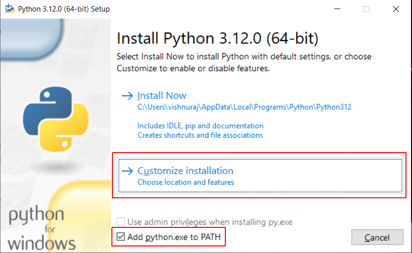
-
Paso 2: Instalación de PostgreSQL.
Para instalar PostgreSQL en su máquina, descargue e instale PostgreSQL directamente desde el sitio web oficial de PostgreSQL
https://www.enterprisedb.com/downloads/postgres-postgresql-downloads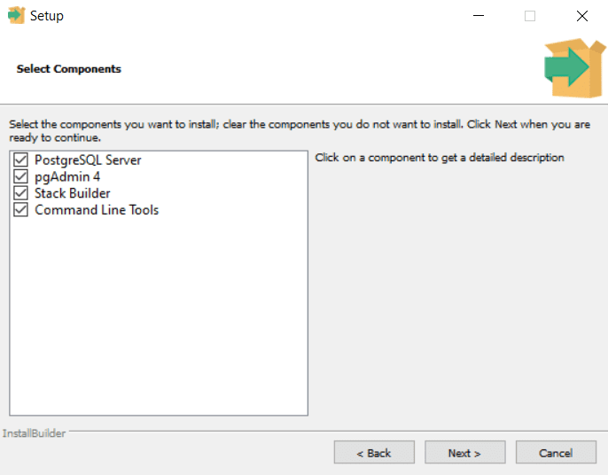
Después de la instalación de PostgreSQL, habrá un asistente de Stack Builder para instalar componentes adicionales para PostgreSQL.
En el asistente, seleccione todas las aplicaciones de la categoría "Controladores de base de datos" y, a continuación, complete el asistente.
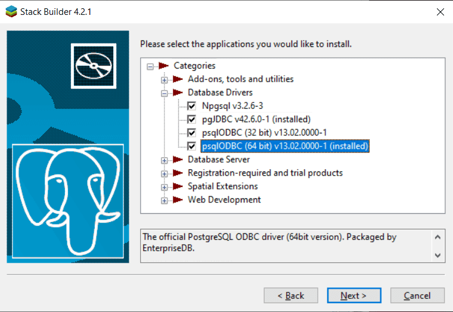
-
Paso 3: Configuración de pgAdmin4 y PSQL.
Al instalar PostgreSQL, ya seleccionamos pgAdmin4 para instalar en la página de selección de componentes del instalador, por lo que pgAdmin ya está instalado en su máquina.
Ábrelo y expande "Servidores" en el Explorador de objetos (pestaña en el lado izquierdo).
A continuación, deberá introducir una contraseña para que pgAdmin sea seguro.
En los Servidores, expanda el Objeto Postgres y luego podrá ver la opción "Inicio de sesión/Roles de grupo".
Haga clic derecho sobre él y cree un nuevo rol.
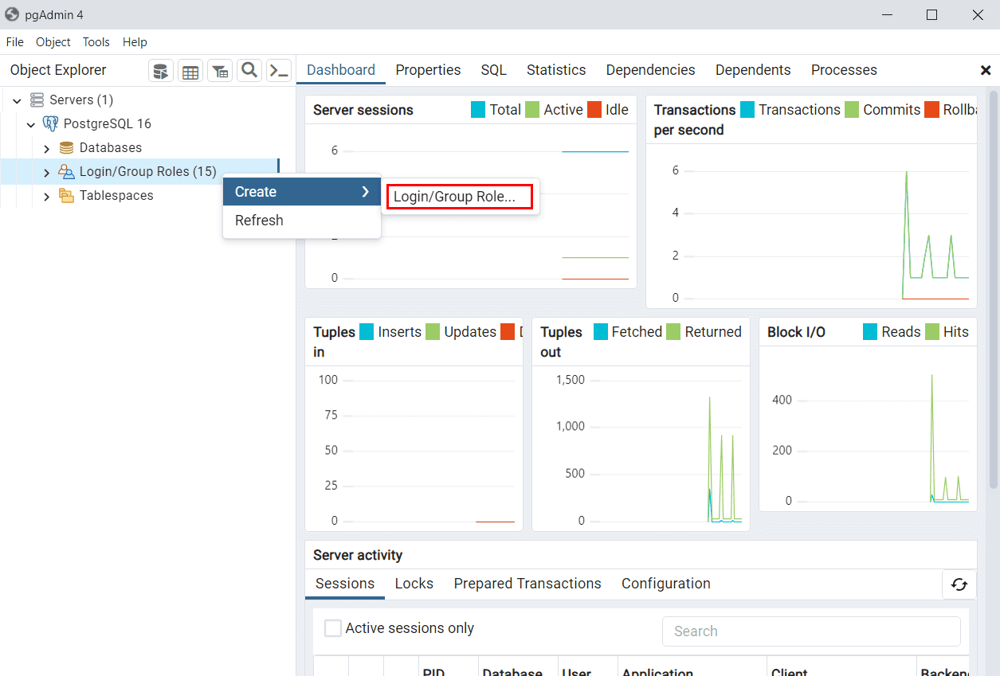
Indique el nombre del rol desde la pestaña "general".
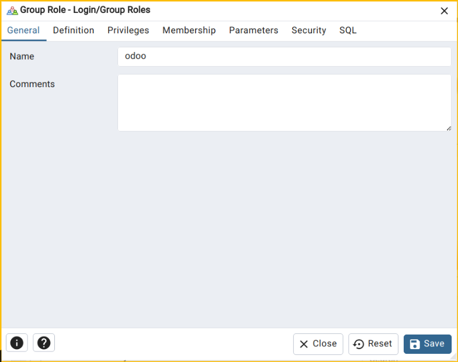
Establezca la contraseña desde la pestaña "Definición".
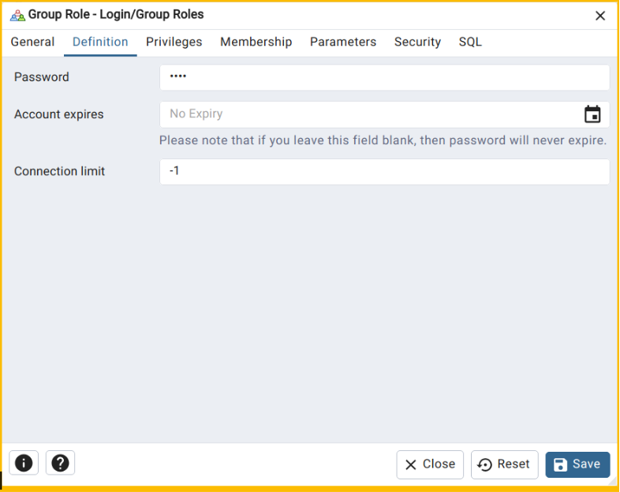
Habilite todas las opciones desde la pestaña "Privilegios".
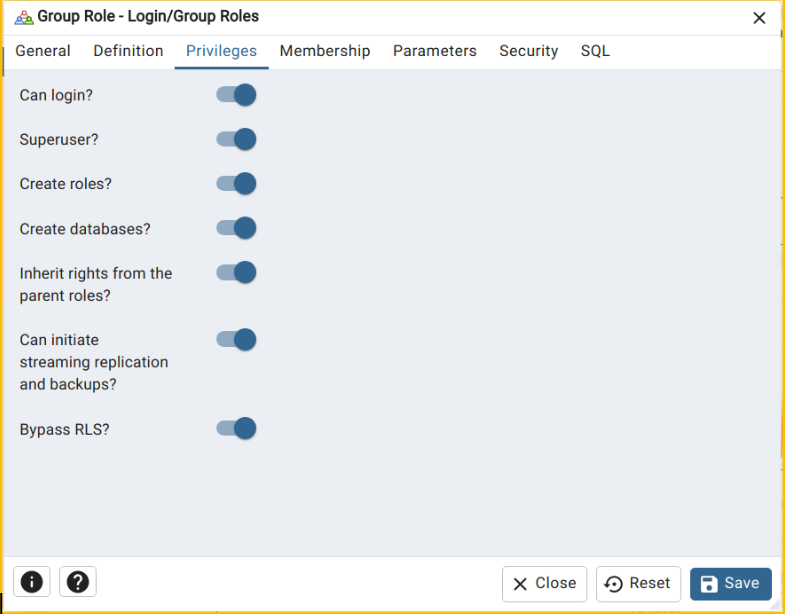
A continuación, guárdalo.
-
Paso 4: Instalación del kit de C++ mediante Visual Studio Tools
C++ es un lenguaje fundamental para el desarrollo de aplicaciones de Windows. Visual Studio proporciona un conjunto completo de herramientas y bibliotecas que facilitan a los desarrolladores la creación de aplicaciones, servicios y componentes de escritorio de Windows con C++. Descargue el instalador de C++ Built Tools directamente desde el sitio web oficial:
https://visualstudio.microsoft.com/visual-cpp-build-tools/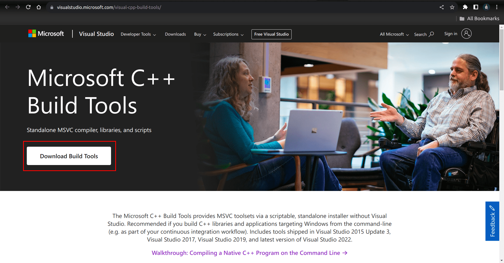
Al instalar el instalador, marque "Desarrollo de escritorio con C++" y seleccione los componentes opcionales como se muestra en la figura.
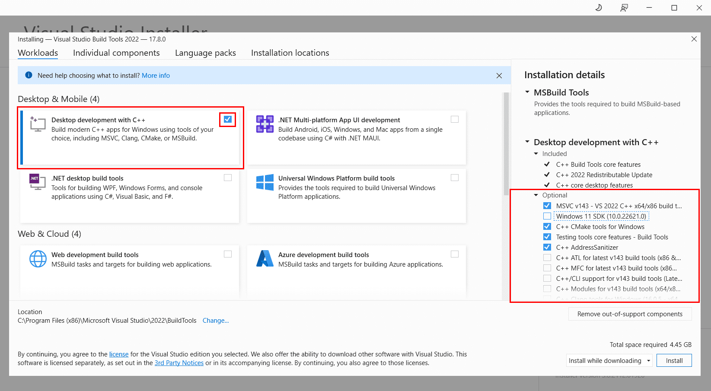
A continuación, complete la instalación y reinicie el equipo para realizar los cambios.
-
Paso 5: Obtener Odoo 17 desde Github
Descargar Odoo 17 desde Github es un proceso sencillo. Para eso, vaya al sitio web oficial de GitHub:
https://github.com/odoo/odoo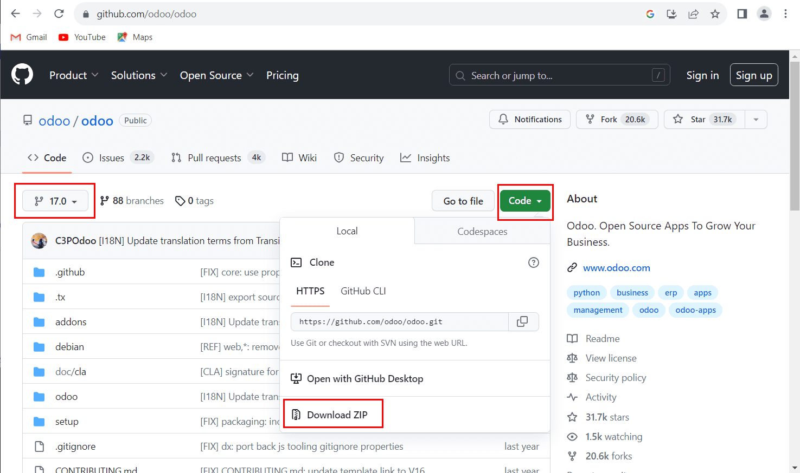
Extráigalo y guárdelo en un lugar seguro (mejor mantenerlo en el directorio de inicio).
-
Paso 6: Instalación de Pycharm
Puede descargar pycharm community desde el sitio web oficial de jetbrains
https://www.jetbrains.com/pycharm/download/?section=windows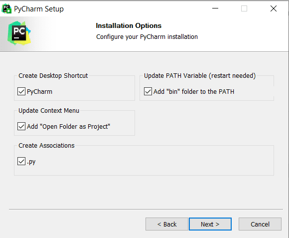
Completa la instalación.
-
Paso 7: Configurar el entorno de desarrollo de Odoo17 en Pycharm
Ahora, el paso final para la configuración de Odoo17, es decir, Configurar el entorno. Para eso, abra el pycharm de las aplicaciones y haga clic en "Abrir proyecto existente".
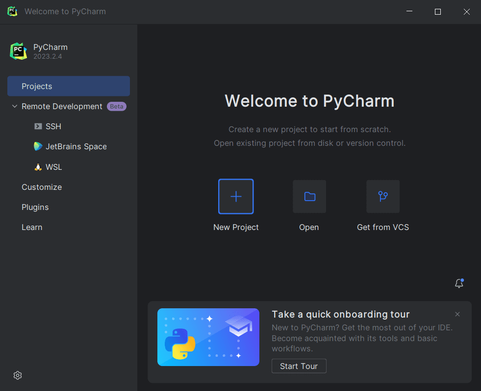
Elija la carpeta Odoo17 extraída y haga clic en aceptar.
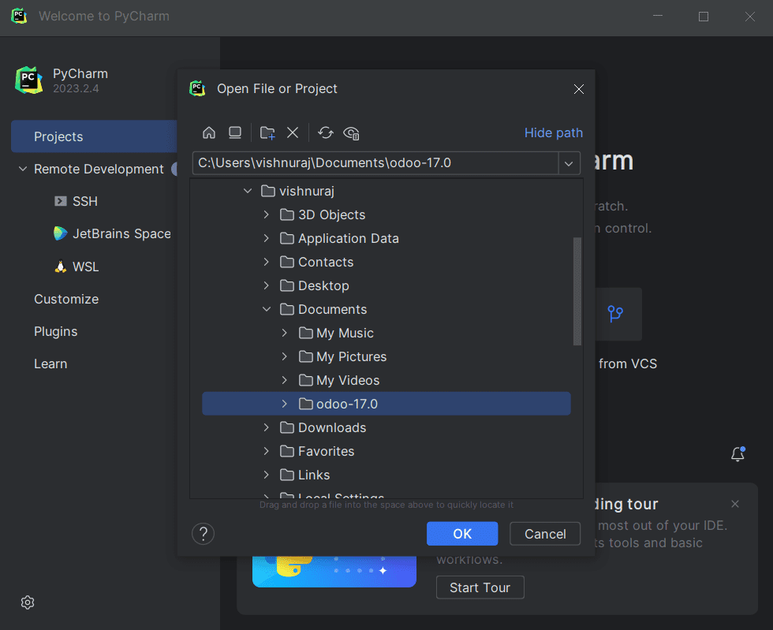
Cree un archivo odoo.conf dentro del directorio haciendo clic derecho en la carpeta Odoo-17 desde la pestaña del proyecto (lado izquierdo).
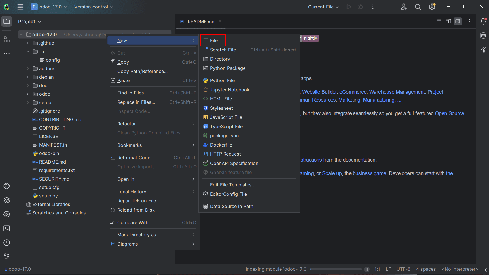
Pega estos códigos dentro de él.
[options] ; Is This The Password That Allows Database Operations: admin_passwd = admin db_host = localhost db_port = 5432 db_user = odoo db_password = odoo addons_path = /home/user/odoo/addons xmlrpc_port = 8017
Cambie el db_user y db_password que se establece cuando se configura PostgreSQL usando pgAdmin.
Además, cambie la ruta de los complementos al directorio "addons" dentro de la carpeta odoo-17.0 extraída.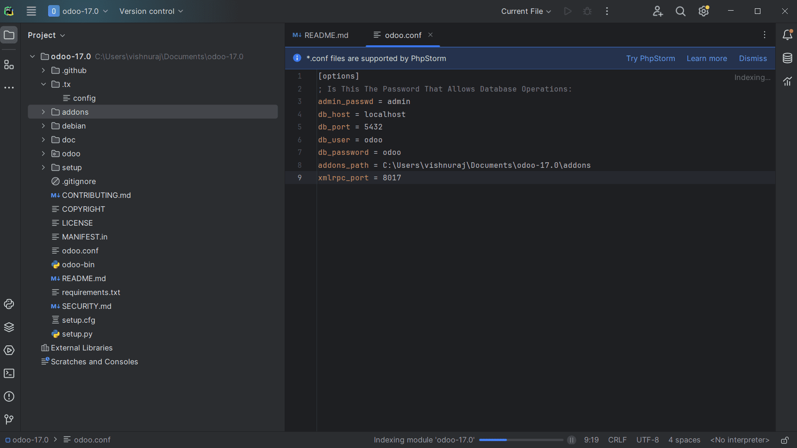
A continuación, necesitamos configurar un intérprete de Python.
Para eso, vaya a Configuración -> Configuración del proyecto -> Intérprete de python.
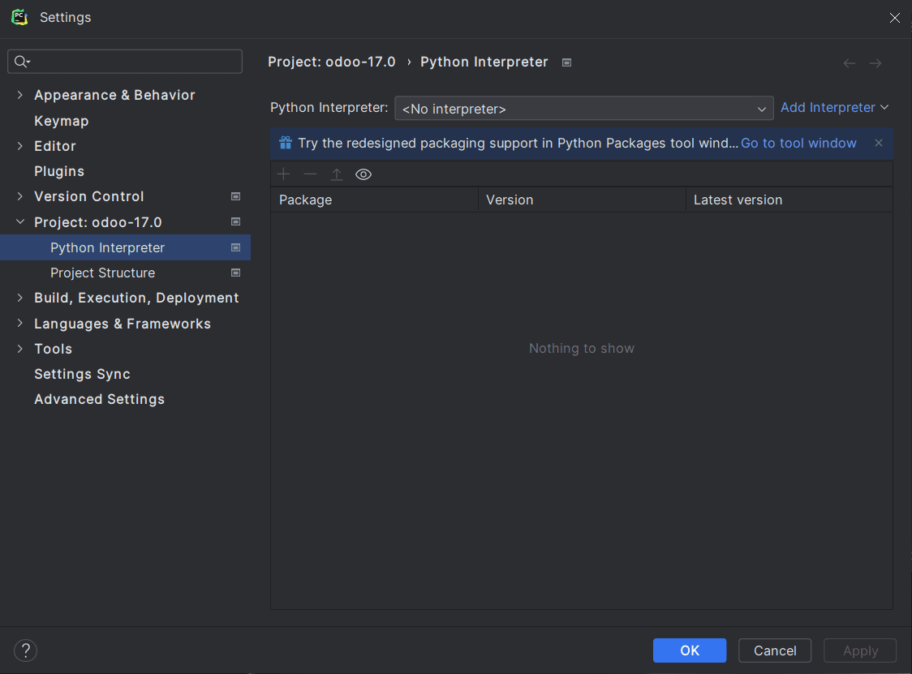
Ahora, elija el intérprete como "Intérprete del sistema" como se muestra en la figura y luego haga clic en Aceptar.
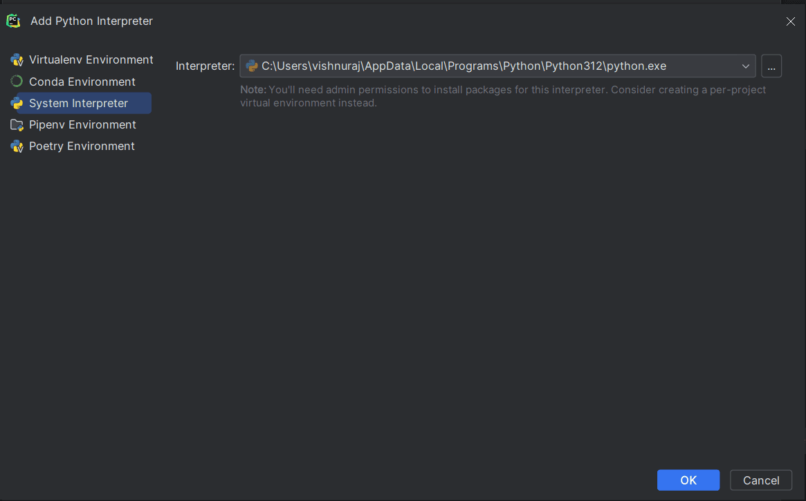
Finalmente, necesitamos crear una configuración para ejecutar la instancia Odoo17.
Para eso, en la opción "Archivo actual" seleccione "Editar configuración".
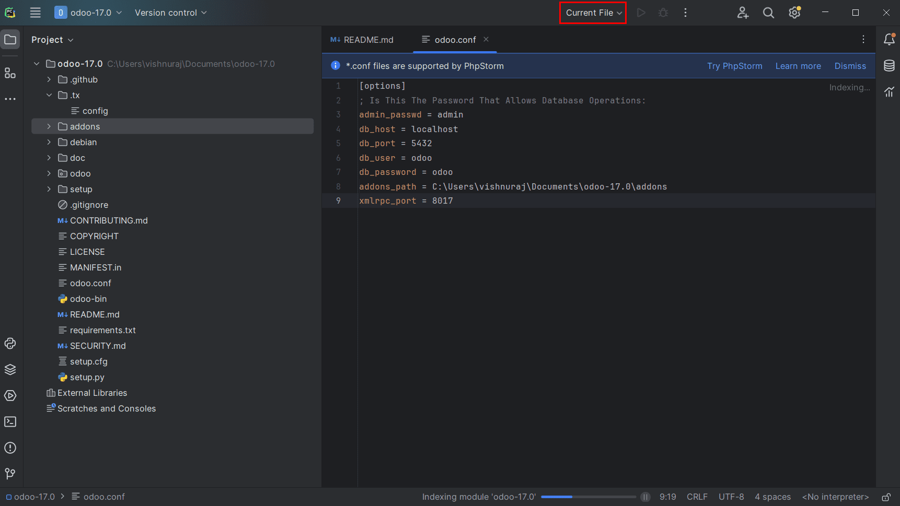
Agregue una nueva configuración usando el ícono Más en el panel superior izquierdo y elija Python de las opciones.
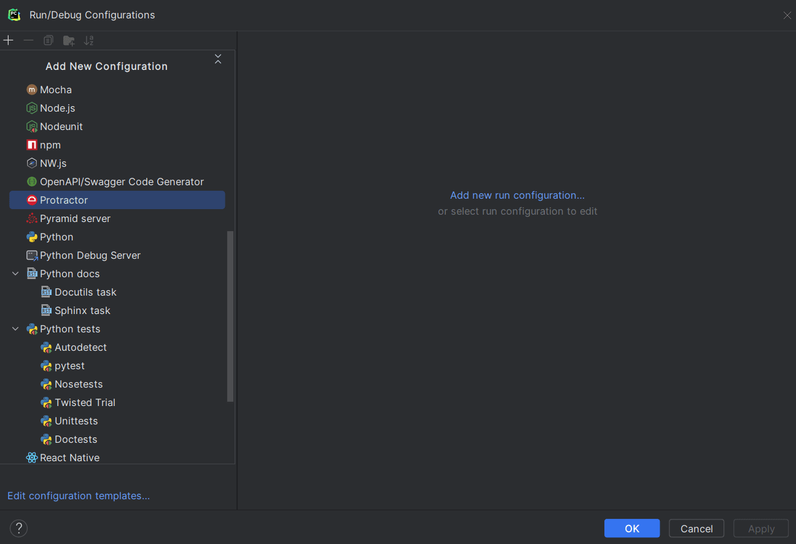
Rellene la información necesaria sobre la configuración como se muestra:
+ Dar un nombre para la configuración + Seleccione "Script path" como archivo "odoo-bin" de Odoo-17 extraído (Directorio del proyecto) + Establezca el intérprete de Python solo si aún no se ha mostrado. + Directorio de trabajo: elija la carpeta del proyecto extraído + Parámetros: -c odoo.conf y, a continuación, haga clic en Aplicar y en Aceptar.
Sí, ahora podemos ejecutar nuestra instancia de Odoo haciendo clic en el icono de reproducción junto a la opción de configuración o mediante Keyboard Shift+F10.
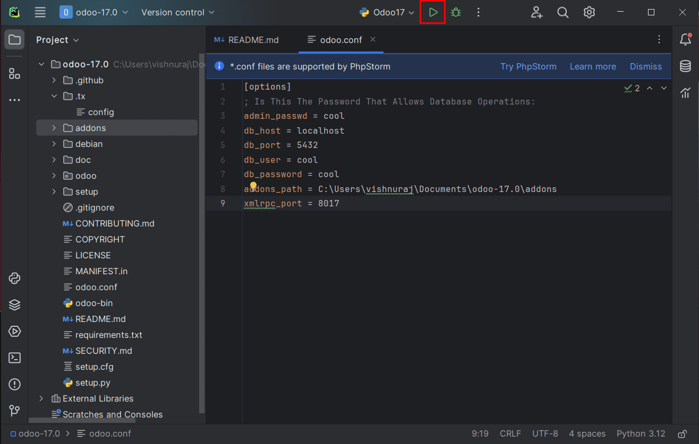
Es posible que falten algunos paquetes de Python por instalar:
* psycopg2 psycopg2-binario * PIL PIL-Herramientas * dateutil dateutils * Win32service pypiwin32
Instale las dependencias si fuese necesario.
Después de agregar los paquetes que faltan, ejecute la instancia una vez más, abra el navegador y pegue la dirección "localhost:8017".
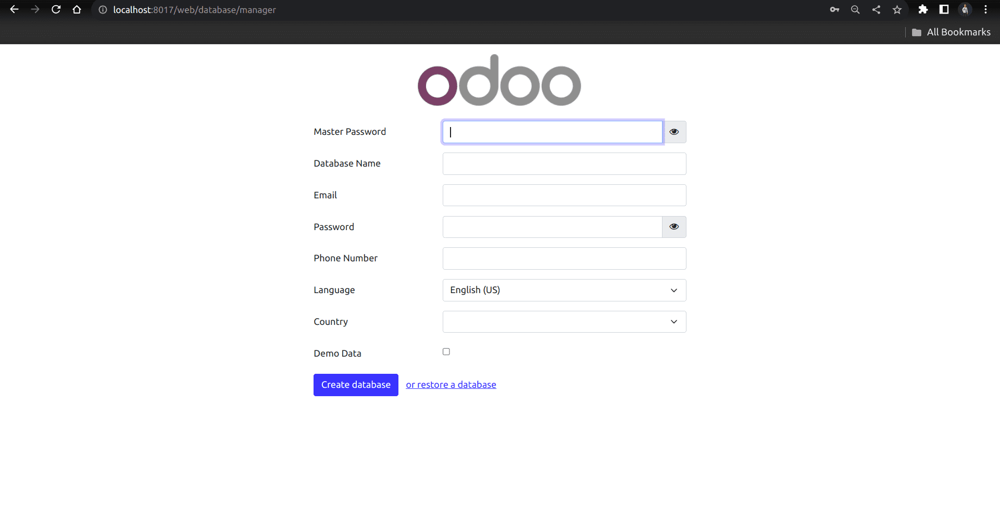